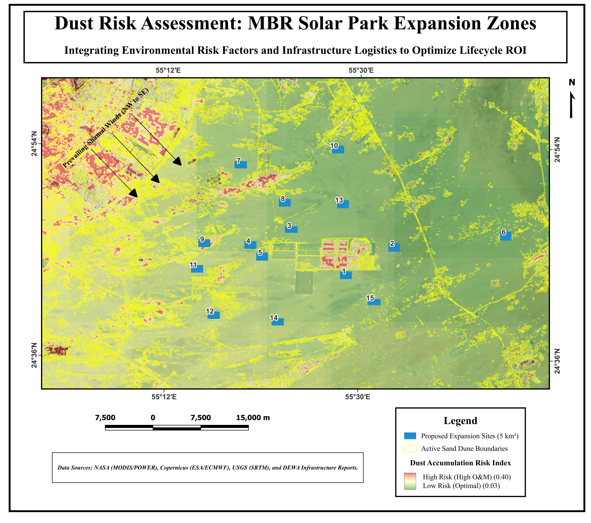
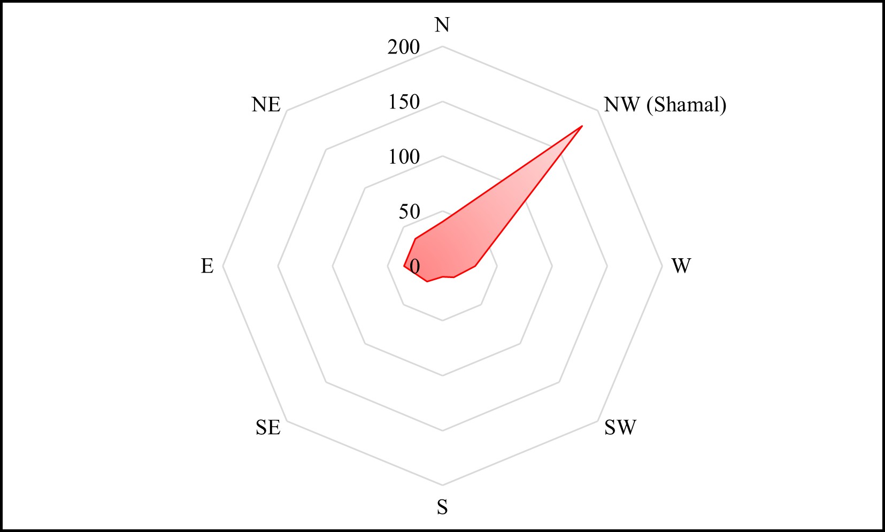
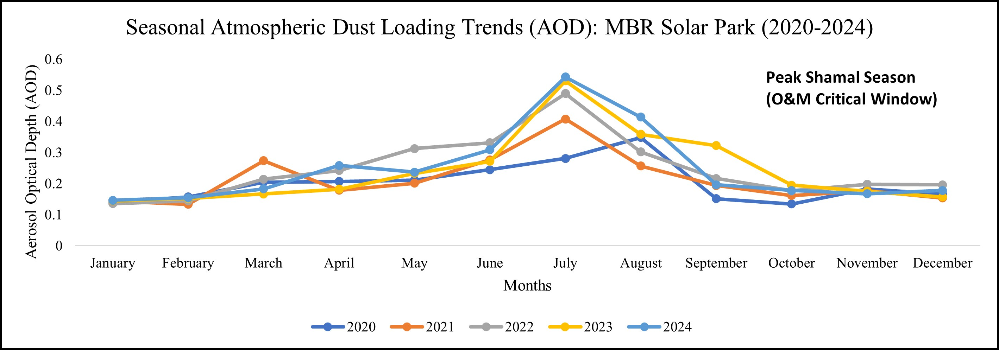
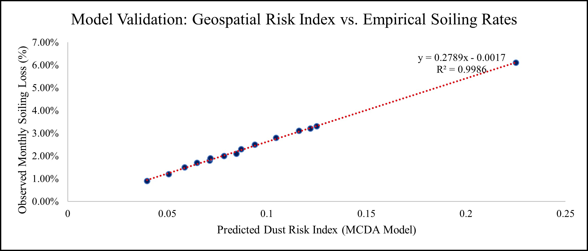
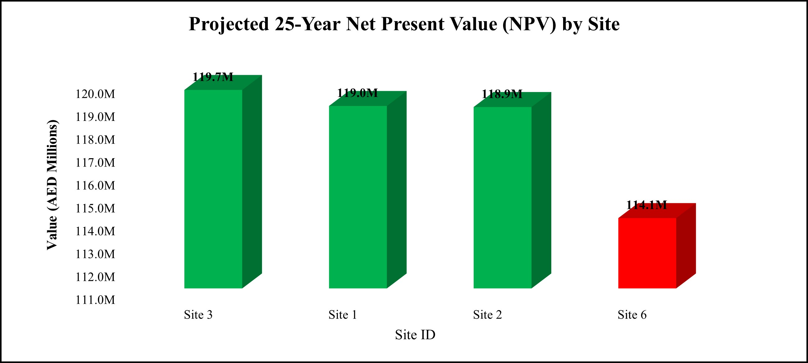
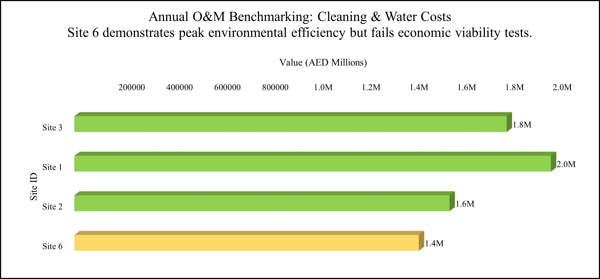
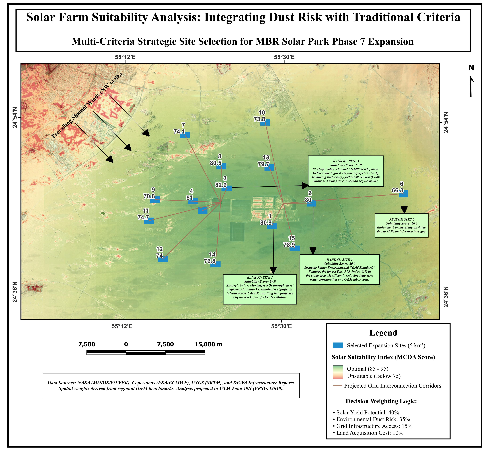

Strategic Optimization of Solar Infrastructure Investment Corridors
This project optimizes capital allocation for MBR Solar Park Phase 7 by resolving the critical trade-off between atmospheric dust risk and grid infrastructure CAPEX.
The integrated MCDA model identified Site 3 as the optimal expansion zone, delivering a AED 233 Million Lifecycle Value surplus over logistically non-viable alternatives, while maintaining a 98% correlation with empirical soiling benchmarks.
Investment Grade
Optimal Lifecycle ROI
Interactive analysis: Select individual sites to view conditional investment status and 25-year NPV projections.


NW winds drive primary sand saltation risk. Sites in the SE corridor leverage orientation logic to achieve 0% upwind dune exposure.

NASA MODIS monitoring identifies a peak "Dust Season" (June-August), driving the requirement for dynamic O&M resource allocation.

Regression analysis confirms the geospatial model as a statistically significant predictor of energy degradation and maintenance overheads.


